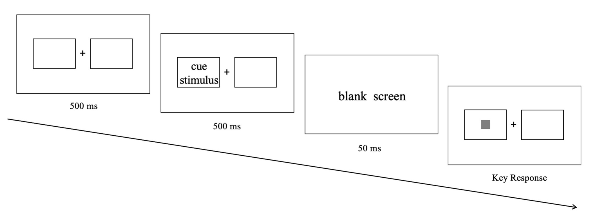
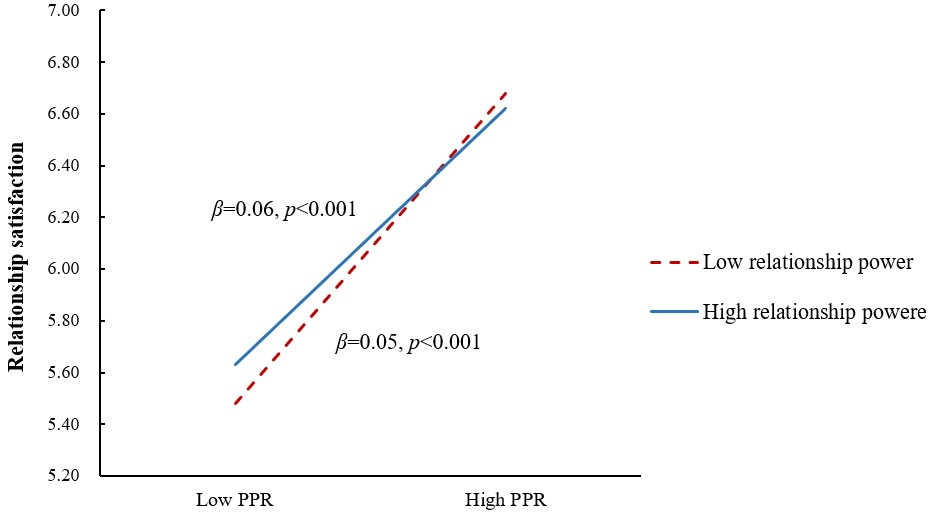
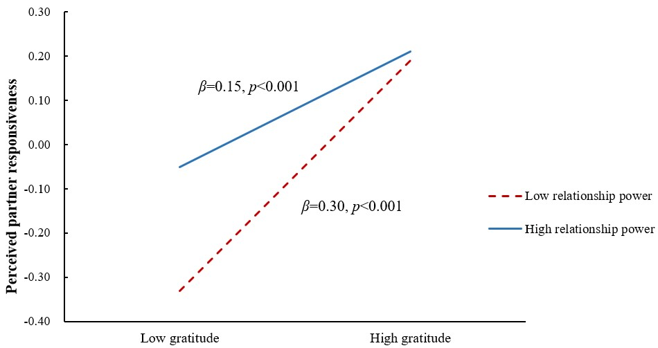
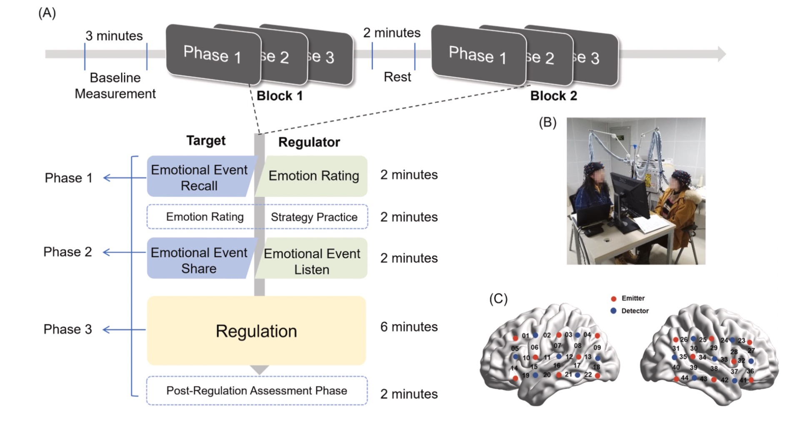
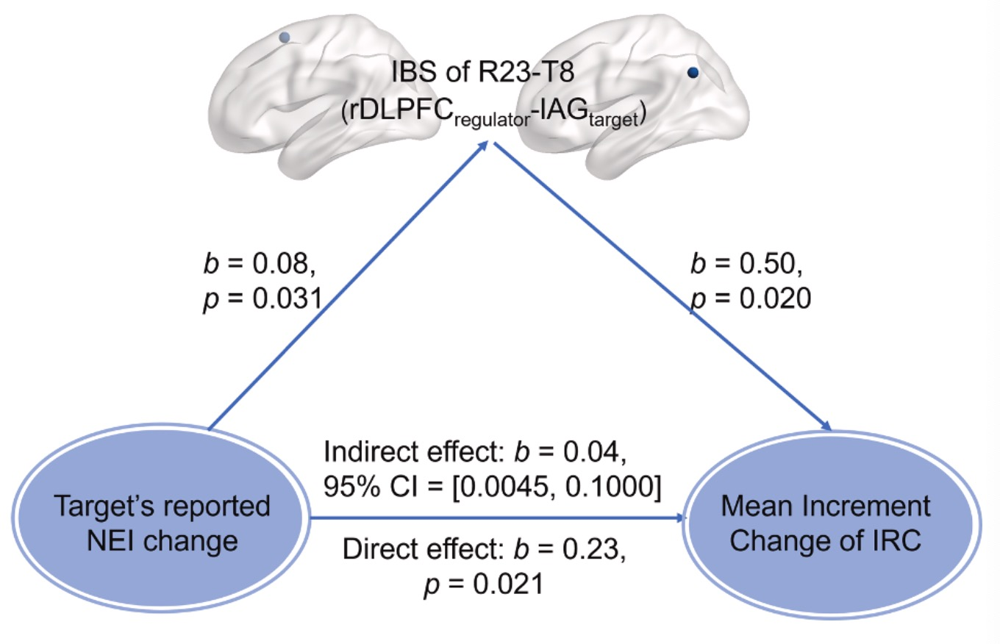
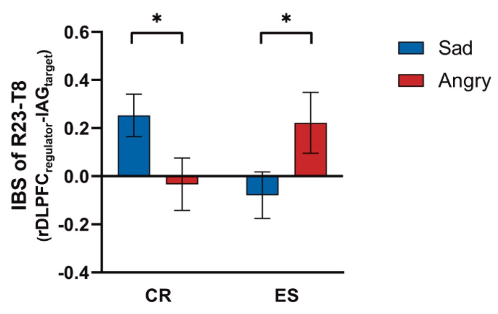
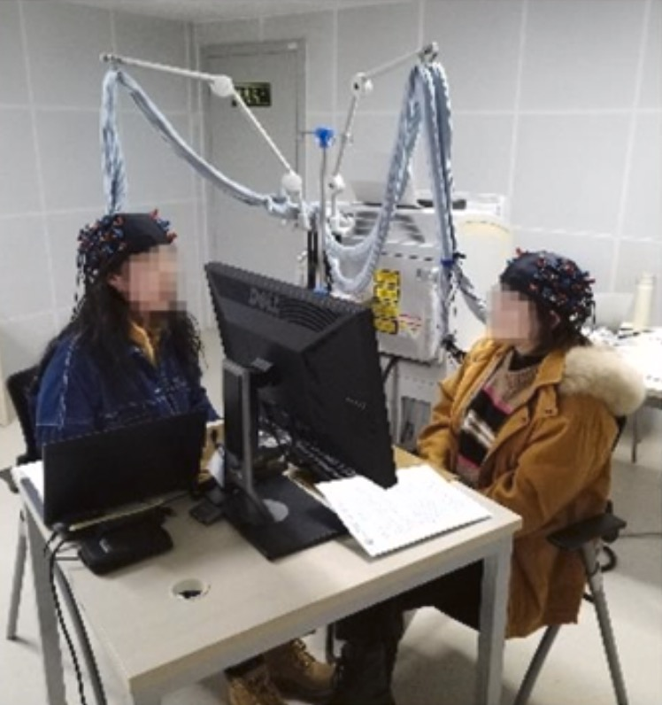

JIN LUYAO
Phone: +86 13912345678 | Email: jinlyao@163.com
Publications
Attentional vigilance of food information in disordered eating behaviors
FIRST AUTHOR
2023
Jin, L., Han, W., & Zheng, Z. (2023). Attentional vigilance of food information in disordered eating behaviors. Frontiers in Psychiatry, 14, 1108995. DOI: 10.3389/fpsyt.2023.1108995


Relationship power attenuated the effects of gratitude on perceived partner responsiveness and satisfaction in romantic relationships
FIRST AUTHOR
2024
Jin, L., Zhu, T., & Wang, Y. (2024). Relationship power attenuated the effects of gratitude on perceived partner responsiveness and satisfaction in romantic relationships. Scientific Reports, 14(1), 21090. DOI: 10.1038/s41598-024-71994-z


Positive resonance: Successful interpersonal emotion regulation facilitated relationship closeness by enhanced inter-brain synchronization
THIRD AUTHOR
2025
Zhu, T., Zhang, X., Jin, L., Wang, L., & Wang, Y. (2025). Positive resonance: Successful interpersonal emotion regulation facilitated relationship closeness by enhanced inter-brain synchronization. NeuroImage, 307, 121042. DOI: 10.1016/j.neuroimage.2025.121042



